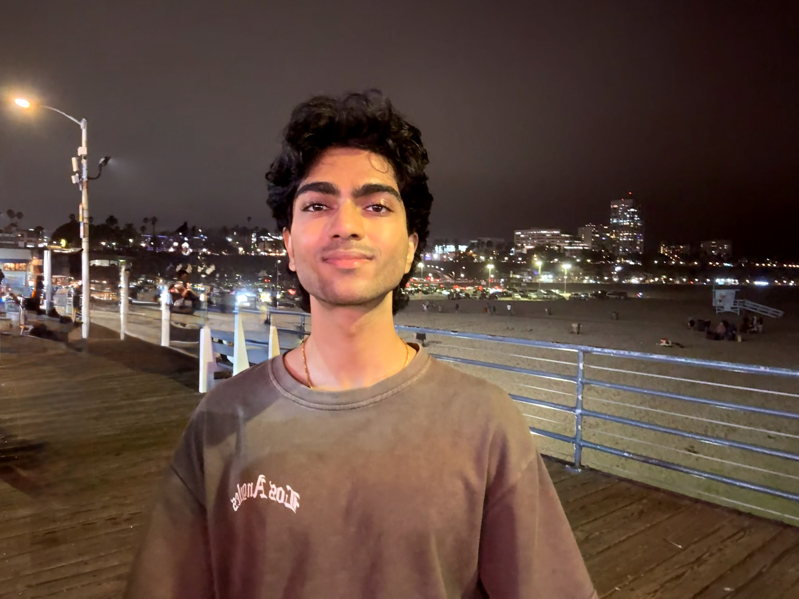
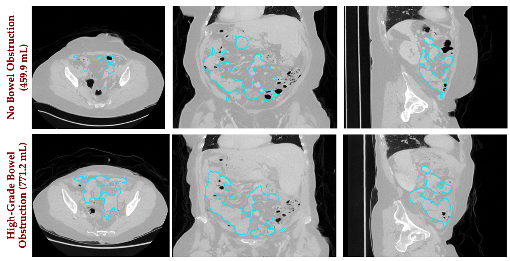
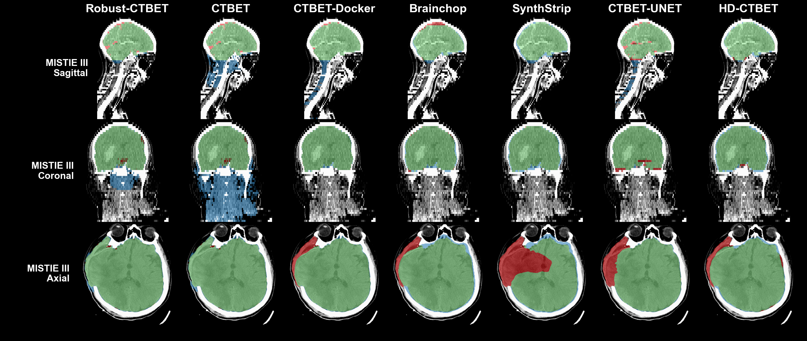
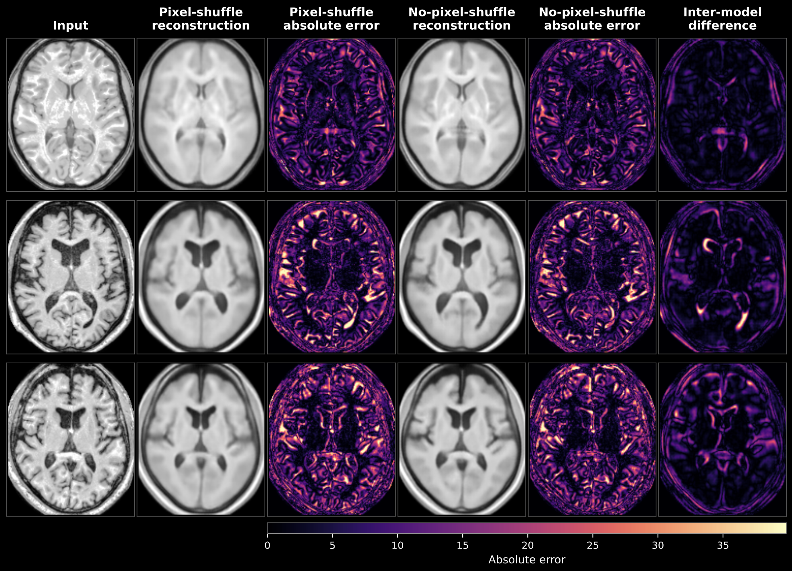
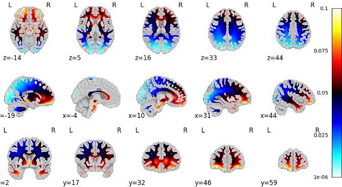
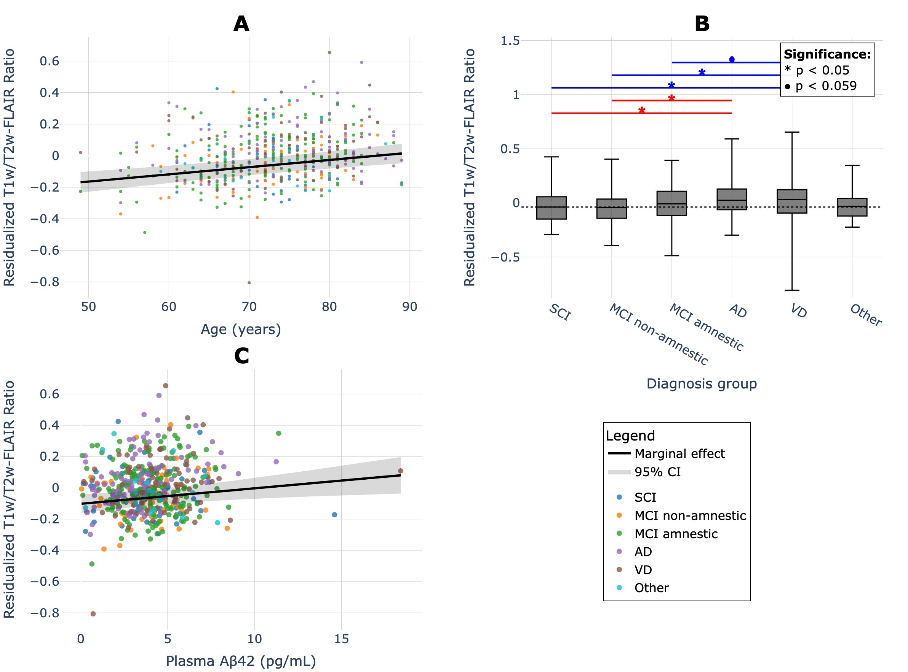
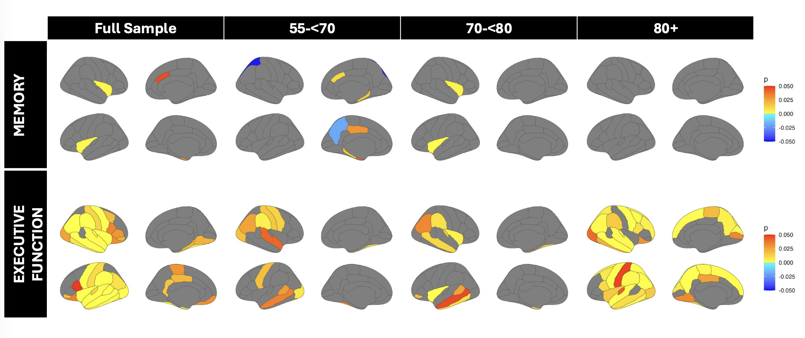
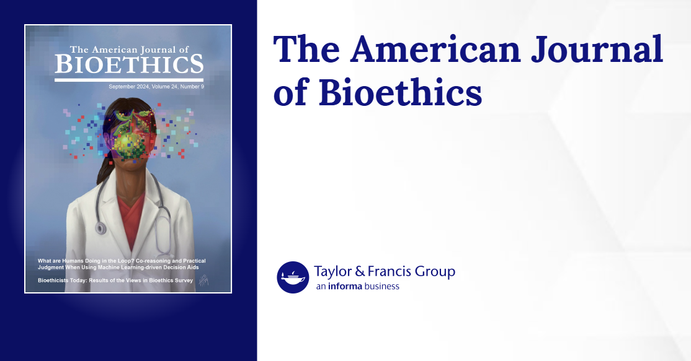
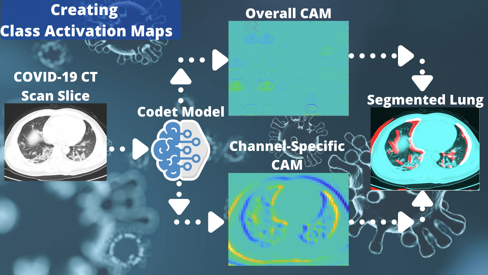

CT brain-extraction benchmark pending acceptance
Our multi-site evaluation of seven automated CT brain-extraction methods across 5,062 scans is pending acceptance at BMC Medical Imaging.
I develop machine learning methods for medical imaging, from multimodal 3D CT generation to robust neuroimaging analysis and disease-related representation learning. I am completing a B.S. in Applied Mathematics & Statistics and Cognitive Science at Johns Hopkins University (December 2026).

Text-conditioned 3D CT synthesis and clinically guided image generation.
Robust brain extraction, image segmentation, and quantitative 3D analysis.
Brain-age prediction, MRI reconstruction, and imaging biomarkers of disease.
Reproducible benchmarks, interpretable models, and clinically meaningful evaluation.
Recent research updates, acceptances, and conference announcements.
Our multi-site evaluation of seven automated CT brain-extraction methods across 5,062 scans is pending acceptance at BMC Medical Imaging.
Co-authored work on insurance coverage gaps among working-age U.S. stroke survivors was accepted for an oral presentation at the 2027 International Stroke Conference.
Our paper on memory-efficient, skip-connection-free whole-brain MRI reconstruction was accepted to the ECCV 2026 AI4M3D Workshop.
Selected work in medical computer vision, 3D imaging, multimodal learning, and computational genomics.

Fine-tuned three MAISI diffusion U-Nets with ClinicalT5 cross-attention, comparing impression-only, full-report, and MedGemma-structured reports on matched study splits. Built preprocessing for 25,489 Merlin CT studies.
Key finding: Structured conditioning improved BiomedCLIP text–image alignment by ~42%; fixed-noise counterfactual experiments revealed limitations in anatomical control.

Developed Robust-CTBET and benchmarked seven brain-extraction methods on 5,062 CT scans from 499 patients at 78 sites, assessing registration, volumetrics, and downstream utility.
Key finding: Robust-CTBET outperformed six competing methods, achieving Dice ≈ 0.98 and a 0.30% scan-level failure rate.

Designed a skip-connection-free 3D autoencoder with a 512-dimensional bottleneck and pixel-shuffle decoder for full-volume T1-weighted MRI reconstruction, evaluated across 40,841 scans.
Key finding: 19.6% less peak GPU memory, 10.4% faster forward/backward execution, and 13.4% fewer parameters versus the no-pixel-shuffle baseline.

Developed brain-age prediction pipelines using harmonized 3D MRI and studied disease-associated deviations in predicted brain age across multi-cohort clinical imaging data.
Key finding: 3.14-year held-out test MAE in the brain-age prediction study.

Integrated LST-AI lesion segmentation, ANTs preprocessing, and relative T1w/T2w-FLAIR measures in 576 participants to investigate Alzheimer’s disease, vascular dementia, and amyloid biomarkers.
Key finding: White matter hyperintensity (WMH) T1w/T2w-FLAIR ratios were significantly higher in individuals with Alzheimer’s disease and vascular dementia compared with those with subjective cognitive impairment, suggesting disease-associated alterations in white matter tissue integrity.

Analyzed FreeSurfer-derived cortical thickness across 68 regions in relation to cognition using age-stratified regression, ANCOVA, and FDR correction.
Key finding: Executive-function associations were most extensive among adults aged 80 and older.

A commentary on interpretability and human–AI collaboration in machine-learning-based clinical decision support.

A selection of first-author presentations and collaborative conference contributions. Click a thumbnail when a public abstract or presentation page is available.
First author · Conference abstract
Abstract DOI ↗First author · Poster presentation
AAIC Poster ↗Co-first author · Poster presentation
AAIC Poster ↗First author · Poster presentation
Poster PDF ↗First author · Poster presentation
Poster PDF ↗First author · Poster presentation
Poster ↗First author · Research seminar presentation
Co-author · Oral abstract accepted
Research appointments across medical image analysis, generative modeling, neuroimaging, and computational genomics.
For research discussions, collaborations, or questions about my work: